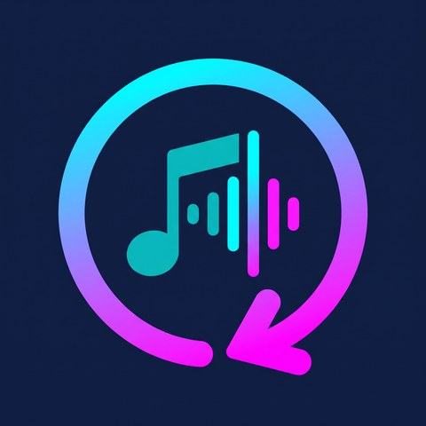

The music you play, saved automatically.
AutoSongs listens to the media session of YouTube Music (ReVanced) — or any
app you allow — notices each track as it plays, and downloads it through a
local yt-dlp bridge in the format you choose. It lands in
Music/AutoSongs/, tagged with title, artist, album and cover
art, indexed so every music player on your phone can see it.
Free to use · no account · no cloud · everything stays on devices you own.

How it works
It watches
A foreground service observes your phone's media sessions — title, artist, album, artwork, playback position — with media notifications as a fallback. When a new track starts, AutoSongs notices.
It asks your bridge
AutoSongs includes its own yt-dlp bridge, so nothing else is
required. Prefer another machine? Run the bridge on Termux, a PC, a NAS, or a
spare phone and choose where the files are saved.
It files it away
The finished file — M4A, Opus, MP3, original audio or video — is written into
Music/AutoSongs/ with metadata and cover art embedded, indexed in
MediaStore, and remembered so it is never downloaded twice.
Pick your format
One choice in the app changes what every future download looks like.
Built to run unattended
Guard rails
Minimum track length, minimum seconds played before downloading, an artist blocklist and a dedupe window — so ads and skipped songs never fill your storage.
Real library files
Title, artist and album tags plus embedded cover art, written through MediaStore so the files show up in every music app you own.
Your bridge, your machine
Use the built-in bridge or run it on the phone itself via Termux, on a box at home, or on a spare Android device. Pair remote options with an eight-character code, or lock them down with a token.
Audio and video
From 160k Opus for storage to MP3 for compatibility (192k on-phone or 320k through an ffmpeg bridge), original audio for quality, or full video up to 4K.
Local by design
No account and no analytics or ad SDKs in the app. Track information travels only between your own devices — see the privacy page for exactly what goes where.
Ready when YouTube changes
When the site shifts, a stale yt-dlp is usually the cause. The
launchers keep yt-dlp current, and the app tells you when the bridge
is unhappy.
Built in, with four more ways to run it
Inside AutoSongs — the default
The downloader runs inside the app. No Python installation, Termux, pairing code, or second device is needed.
Windows
Run AutoSongsBridgeSetup.exe, or double-click the single-file
launcher autosongs-bridge.cmd. It prints a pairing code — type it into the app.
Linux & macOS
One file, nothing to install: sh autosongs-bridge.sh. Needs
Python 3; it sets up yt-dlp for itself.
Termux on the same phone
Run the bridge on the phone that plays the music. Host
127.0.0.1, port 8765, no network involved.
A spare Android phone
The companion AutoSongs Bridge app turns any second phone or tablet into the downloader — no PC, no Termux.
Questions people ask
Do I need a server or an account?
No. The default bridge runs inside AutoSongs itself. You can also put the bridge in Termux, on a home computer, or on a spare Android device. AutoSongs has no user accounts, and the app talks only to your chosen bridge during normal use.
Which apps can AutoSongs watch?
Anything that publishes a media session or media notifications on your phone. It is built around YouTube Music (ReVanced), but other players work the same way — you choose which ones to allow.
Where do the files go?
Into Music/AutoSongs/ on your phone, written through MediaStore so
they appear in every music app installed on the device — not just inside AutoSongs.
Why does a download fail with a 403?
Almost always a stale yt-dlp after a YouTube change. Update it
(pip install -U yt-dlp) or re-run the launcher, which keeps it current,
and try again.
Is this legal?
AutoSongs is a tool. You are responsible for using it only on content you have the right to download — your own uploads, Creative Commons or public-domain material, or anything else your local law and licences permit. See the rights notice.
Ready when you are
Two steps and about five minutes: the app on your phone, the bridge on a machine you trust.
Download AutoSongs 1.4.26 Install guideAutoSongs is free and always will be. If it saves you time, a coffee helps keep it maintained.